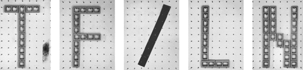
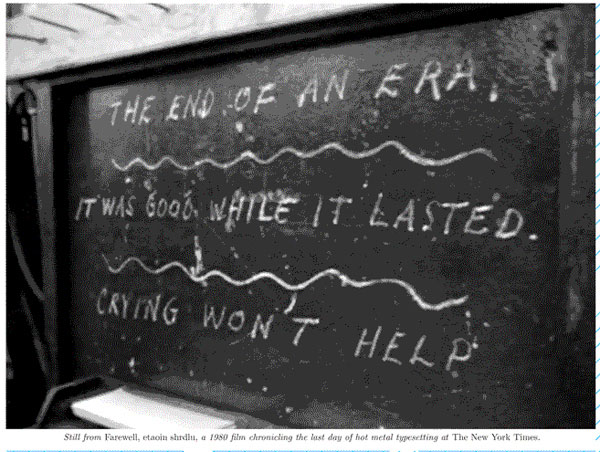

-
The First/Last Newspaper at Port Authority
by Jessica Loudis December 4, 2009
“No sooner than this text has been written than it will be full of holes.”
– Dexter SinisterAbout a month and a half ago, two intrepid young Germans announced their intent to launch the world’s first ‘smartpaper’—a publication that enables readers to compile their own publication from blogs and newspapers of their choosing. Extending an olive branch across the inhospitable divide of old/new media, the founders struck content-sharing deals with a few big English and German dailies, and, like their less user-friendly counterparts, even promised to deliver to readers’ doorsteps.
Around that same time, somebody sent me a link to the Twitter Times—a “real-time personalized newspaper generated from your Twitter account.” If you happen to follow Rainn Wilson and Slavoj Zizek (as I do) then you would be forgiven for quickly abandoning this form of online news, but the point here is that in spite of hype about the Death of Journalism, there’s no shortage of newspaper facsimiles; and more specifically, examples of new media toying with—sometimes uncomfortably—older and more recognizable forms.
Roughly three weeks ago, art/design collective Dexter Sinister undertook a similar project, launching their own short-lived newspaper in honor of Performa. Unlike most papers, theirs—the aptly titled First/Last Newspaper—came with a predetermined expiration date. During Performa, Dexter Sinister set up shop in the shadow of the Grey Lady—across from the New York Times headquarters on 8th Avenue—and handed out TF/LN papers “shopping-bag-on-subway style” to lift a phrase from new neighbor Holland Cotter. Over a three week period from November 4th to the 21st, the collective put out six editions of the paper, then celebrated its demise by wrapping the remaining papers around fish & chips (ha, ha) and once again distributing them to the public.
While the project somewhat glibly claims to be “as much about the current state of news media as anything else,” the papers themselves skirt the line between media meta-commentary and art world solipsism. Although some of the content is contemporary, most of it resists time-stamping itself, and instead swims in ruminations on topics as varied as Michel Foucault, the conditions of artistic production, and most curiously, the Large Hadron Collider. (They explain what it actually does). In contrast to straight journalism, dates don’t matter (some pieces are over a century old) and the divide between reportage and opinion often runs perilously thin.
Although fun, the mishmash of old and new content doesn’t fully clarify the aim of the critique. Is Dexter Sinister suggesting that a daily publication that departs from the logic of print media—that is, breaking news first—is fundamentally unsustainable? Are they saying that the form will always lead to collapse, regardless of content? By calling TF/LN a newspaper while running content better suited for a quarterly or blog, Dexter Sinister borrows the logic of daily print media and deliberately mummifies TF/LN by ignoring it. This is clever, but at the same time leaves little difference between TF/LN and a zine.
Ultimately, though, TF/LN succeeds in a far more important regard—by publishing writing that’s highly intelligent and equally entertaining. Sidestepping punchy headlines and stale ledes (a typical headline is “They Came to See Who Came”) the writers are given space to wander across subject and genres, and usually to the reader’s benefit. In this sense, the real success of the project isn’t in staging the birth and death of a newspaper (there’s no shortage of that these days) but in reminding readers how content should carry a publication beyond its form. In an interview with the Financial Times, Dexter Sinister member Stuart Bailey claimed that because editors didn’t see the articles ahead of time, the “performance” of the project was the last-minute act of throwing the paper together. This may have been the performance, but it almost seems besides the point. Between the New York Times, Twitter Times and First/Last Newspaper, there’s no lack of journalistic models, and what form a paper takes is still, perhaps, less important than what’s inside it.

{kind=link}
{kind=link}
1 Comment
The First/Last Newspaper at Port Authority « Black Octavo
[...] at Idiom on December 4, 2009 “No sooner than this text has been written than it will be full of [...]